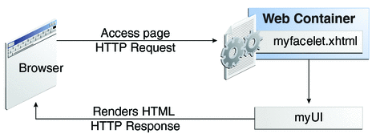

What Is a JavaServer Faces Application?
The functionality provided by a JavaServer Faces application is similar to that of any other Java web application. A typical JavaServer Faces application includes the following parts:
A set of web pages in which components are laid out.
A set of tags to add components to the web page.
A set of backing beans, which are JavaBeans components that define properties and functions for components on a page.
A web deployment descriptor (web.xml file).
Optionally, one or more application configuration resource files such as a faces-config.xml file, which can be used to define page navigation rules and configure beans and other custom objects such as custom components.
Optionally, a set of custom objects created by the application developer. These objects can include custom components, validators, converters, or listeners.
A set of custom tags for representing custom objects on the page.
Figure 4-1 describes the interaction between client and server in a typical JavaServer Faces application. In response to a client request, a web page is rendered by the web container that implements JavaServer Faces technology.
Figure 4-1 Responding to a Client Request for a JavaServer Faces Page
The web page, myfacelet.xhtml, is built using JavaServer Faces component tags. Component tags are used to add components to the view (represented by myUI in the diagram), which is the server-side representation of the page. In addition to components, the web page can also reference objects such as the following:
Any event listeners, validators, and converters that are registered on the components
The JavaBeans components that capture the data and process the application-specific functionality of the components
On request from the client, the view is rendered as a response. Rendering is the process whereby, based on the server-side view, the web container generates output such as HTML or XHTML that can be read by the client, such as a browser.